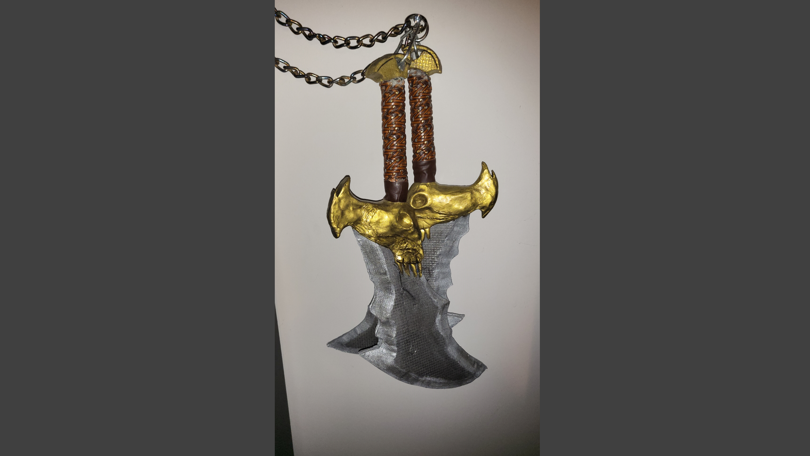
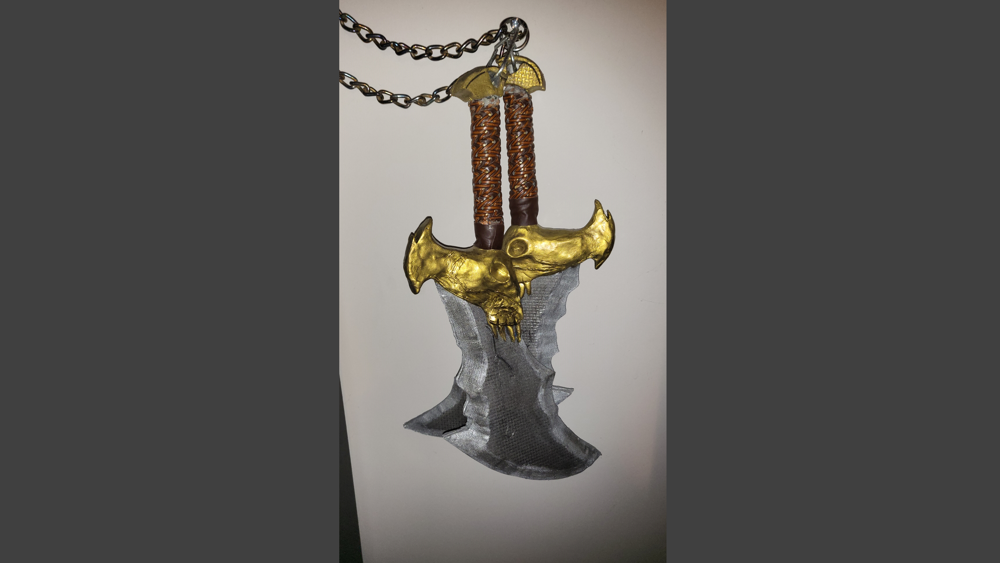
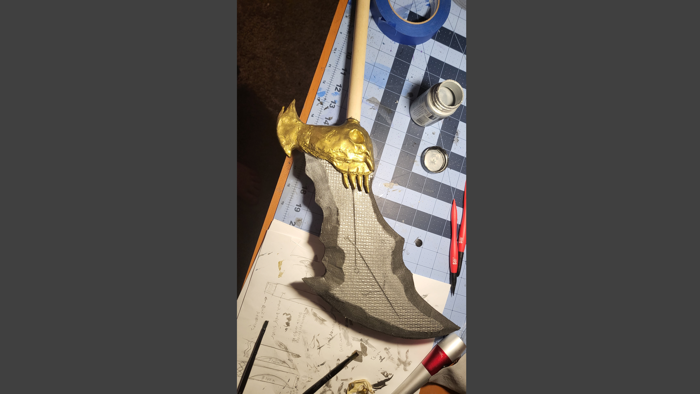
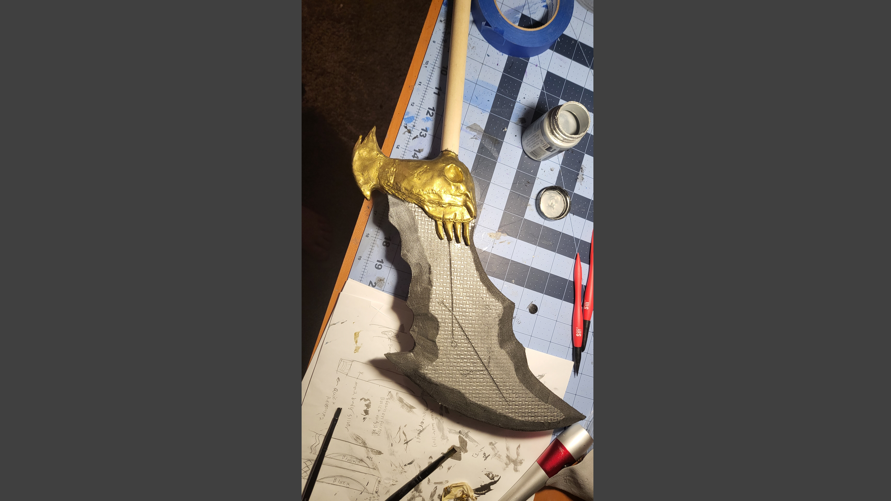

The blades of chaos are made of floor mat foam, while the gold skulls are made of moldable clay foam. The hilt is made of a wooden dowel wrapped in a belt.
And the chains are actually real chains, which I picked up at Walmart.
I’m really pleased with the way these came out. Sculpting the skulls was a really difficult process, and it was the first (successful) time I used foam clay.
In order to get the chains to have the burnt look, I used a propane torch and heated each link until red hot, then quenched them in some water.
When I played the first two god of war games, the skulls of the blades seemed to have a fleshy texture to them, which is what I went for in this build.
It was not until God of War III that I realized they were more of a metal texture.
 

 
